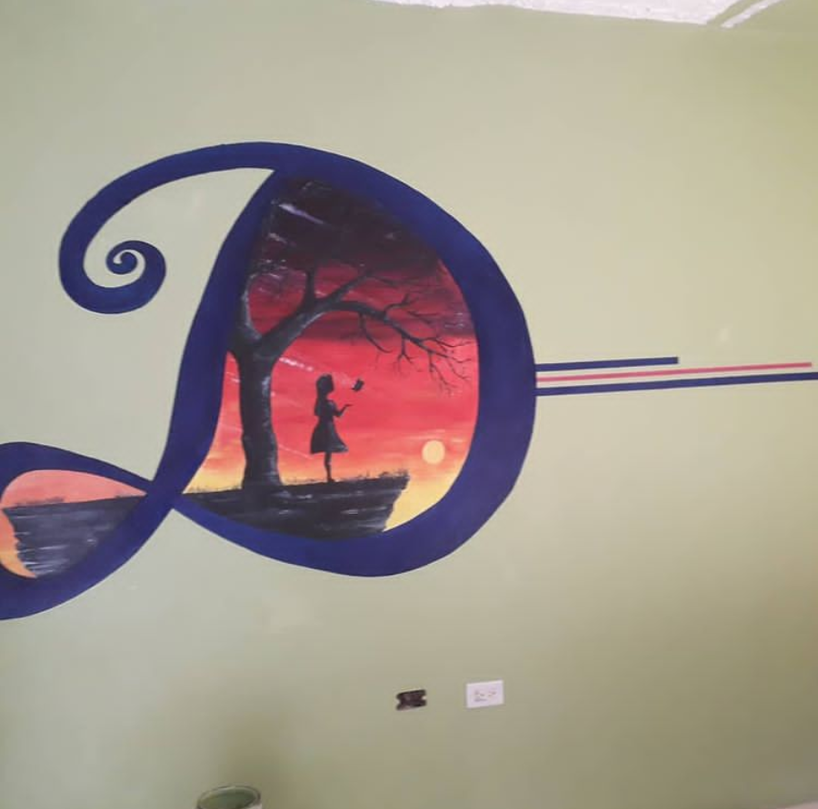

Mural for my niece
This piece was designed and painted specifically with my niece in mind as she wanted to lift the vibe in her room.
What is a mural?
A mural is any piece of graphic artwork that is painted or applied directly to a wall, ceiling or other permanent substrate. Mural techniques include fresco, mosaic, graffiti and marouflage.
Pencil portrait
This piece was done using 3 different shades of pencils and a drawing canvas.
What is Drawing?
Drawing is a form of visual art in which an artist uses instruments to mark paper or other two-dimensional surface. Drawing instruments include graphite pencils, pen and ink, various kinds of paints, inked brushes, colored pencils, crayons, charcoal, chalk, pastels, erasers, markers, styluses, and metals.